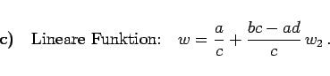

Inhalt Index DeskTop Bronstein

 Funktionentheorie Funktionen einer komplexen Veränderlichen Konforme Abbildung Einfachste konforme Abbildungen
Funktionentheorie Funktionen einer komplexen Veränderlichen Konforme Abbildung Einfachste konforme Abbildungen


Für die konforme Abbildung in der Form der gebrochenlinearen Funktion
| (14.13a) |
kann die Transformation in drei Schritte zerlegt werden:
| (14.13b) |
| (14.13c) |
|  | (14.13d) |
Es werden wieder Kreise in Kreise überführt (Kreisverwandtschaft), wobei Geraden als Kreise mit aufgefaßt werden. Fixpunkte dieser konformen Abbildung sind die beiden Punkte, die der quadratischen Gleichung genügen. Sind die Punkte z1 und z2 Spiegelpunkte in bezug auf den Kreis K1 der z-Ebene, dann sind ihre Bildpunkte w1 und w2 in der w-Ebene ebenfalls Spiegelpunkte in bezug auf den Bildkreis K2 von . Das orthogonale Netz, das in das orthogonale kartesische Netz der w-Ebene übergeht, ist in der folgenden Abbildung dargestellt.